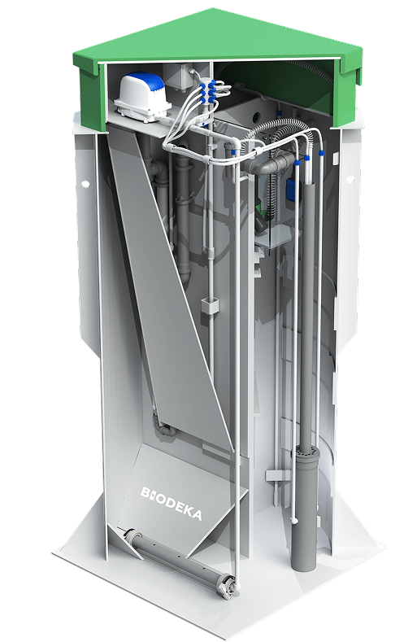

<section class="section product-info-section mb-100">
	<div class="block-container">
		<div class="product-info-block">
			<div class="product-info-block__content">
				<div class="block-heading">
					<h2 class="block-heading__title">Комплексные решения по водоснабжению</h2>
					<div class="block-heading__text mt">
						<p>
							Автономная канализация BioDeka — аэрационная установка для круглогодичной очистки хозяйственно-бытовых
							сточных вод в условиях отсутствия централизованной системы канализации.
						</p>
						<p>
							Цилиндрическая форма корпуса установки с горизонтально расположенными грунтозацепами и боковыми ребрами
							жесткости исключает «всплытие» и вероятность деформации корпуса даже в самых сложных грунтах.
							Изготавливаются септики БиоДека в заводских условиях из химически стойкого полимерного материала
							(полипропилен) не подверженного коррозии и сохраняющего свои свойства на протяжении длительного времени
						</p>
						<p>
							Корпус установки биологической очистки BioDeka полностью экологичен, а очищенная воды на выходе не
							нарушает природную среду и не требует почвенной доочистки. Система воздушных продувок способствует
							усреднению сточных вод и препятствует возникновению застойных зон, что в свою очередь, исключает появление
							неприятных запахов
						</p>
					</div>
				</div>
				<div class="product-info-numbers">
					<div class="product-info-numbers__item">
						<span class="product-info-numbers__value">98%</span>
						<span class="product-info-numbers__title">Очистка сточных вод</span>
					</div>
					<div class="product-info-numbers__item">
						<span class="product-info-numbers__value">3 <span class="small">года</span></span>
						<span class="product-info-numbers__title">Гарантия</span>
					</div>
					<div class="product-info-numbers__item">
						<span class="product-info-numbers__value">100%</span>
						<span class="product-info-numbers__title">Отсутствие запахов</span>
					</div>
				</div>
			</div>
			<div class="product-info-block__image">
				
			</div>
		</div>
	</div>
</section>